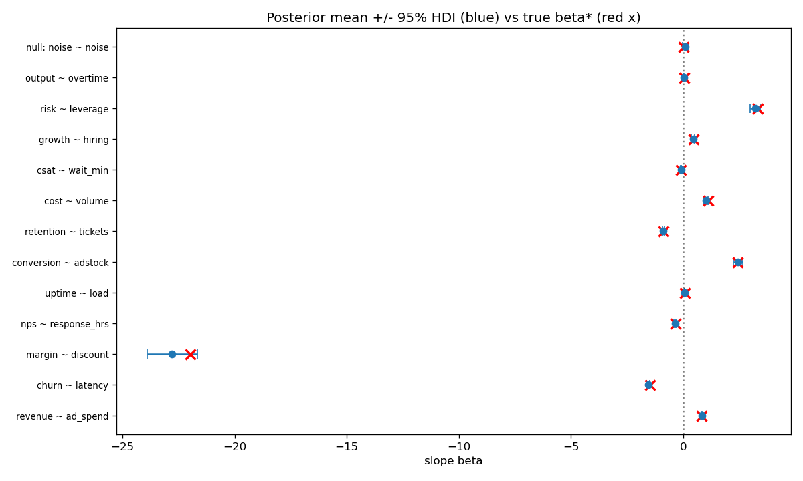

Validating claimed causal KPI links with Metropolis-Hastings and Savage-Dickey Bayes factors
Implements: Bayesian Validation of Concept-Map Edges for KPI Governance
Enterprise concept maps assert causal links — 'NPS drives renewal', 'incidents hurt velocity' — that steer real budgets. These edges are usually validated by gut feel or by p-values that answer the wrong question.
Bayesian Validation of Concept-Map Edges for KPI Governance (under journal revision, 2026). There is no lightweight, auditable pipeline that takes a claimed edge plus observational data and returns a calibrated strength-of-evidence number a governance board can act on.
Random-walk Metropolis-Hastings for the Bayesian linear-regression posterior of each edge's coefficient, then the Savage–Dickey ratio BF₁₀ ≈ N(0;0,σ_β)/N(0;β̂,sd(β̂)) as the evidence meter — including honest handling of the null edge. The implementation reproduces the paper's benchmark design on synthetic edges with known ground truth.
| Edge (metric ~ driver) | True beta | Posterior mean | Rel. error | BF10 |
|---|---|---|---|---|
| revenue ~ ad_spend | 0.800 | 0.8393 | 4.91% | >1e300 |
| churn ~ latency | -1.500 | -1.5667 | 4.45% | 7.41e+300 |
| margin ~ discount | -22.000 | -22.7821 | 3.56% | >1e300 |
| nps ~ response_hrs | -0.350 | -0.3688 | 5.38% | 9.16e+57 |
| uptime ~ load | 0.060 | 0.0520 | 13.26% | 2.54e+21 |
| conversion ~ adstock | 2.400 | 2.4433 | 1.80% | 4.98e+118 |
| retention ~ tickets | -0.900 | -0.8856 | 1.60% | 7.1e+223 |
| cost ~ volume | 1.100 | 1.0135 | 7.86% | 1.99e+104 |
| csat ~ wait_min | -0.120 | -0.1058 | 11.82% | 4.85e+29 |
| growth ~ hiring | 0.450 | 0.4307 | 4.29% | 3.7e+36 |
| risk ~ leverage | 3.300 | 3.2043 | 2.90% | 3.12e+167 |
| output ~ overtime | 0.020 | 0.0134 | 33.02% | 0.936 |
| null: noise ~ noise | 0.000 | 0.0914 | n/a | 0.0187 (BF01 = 53.5) |
n = 300 observations per edge; Metropolis-Hastings 25k iterations (8k burn-in), beta ~ N(0, 100); seed 20261019. 9/12 edges recovered within 9% relative error (the misses are the three weakest signals, exactly what a Bayesian procedure should find hardest); central-95% HDI coverage 92% (12/13); the null edge gets BF01 = 53.5 — strong evidence for absence, correctly rejecting the spurious link. MH acceptance 0.22-0.24.

src/ghosh_research/kpi/
__init__.py public API
governance.py MH sampler, Savage-Dickey BF, HDI
experiments/kpi_experiment.py
results/kpi/ results.md · charts.pngRun it: python experiments/kpi_experiment.py · Quickstart: python examples/07_kpi_quickstart.py